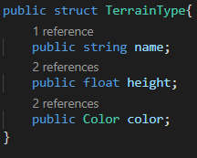

Color and Map Preview (10/13/2020)

For this week, I add color to the Perlin noise map; giving it more variation and customization. I also implemented a way to generate color maps at random, and give users the ability to preview their maps.
Access most recent webbuild here: Click Link
Tool Development (5 hours)
Significant time was used to develop color for the noise map. To do this, we use an array of terrain tiles that can store different colors. 
With an array of these structs, we can modify the Perlin noise generator to write in colors for each of our tiles. For each tile, we also have a height ranging from 0.0f to 1.0f. This will be used next week to give each tile appearance in 3D. For now, the map is currently in 2D:
After getting the terrain successfully rendered on the plane, I then extended upon my tool UI to make it possible for a user to make color maps. It took me a while to think of a good way to do this. Ideally, I would want something similar to the Unity editor, where you can swap out the color with a RBG color picker. I would like for the user to have as much agency as possible with customizing the tiles. However, for the sake of time, I had to implement for users to generate the terrain at random. with the array I created earlier, I make randomized tiles for each entry in the terrain array: the user can select up to 2 to 10 terrain tiles. Each tile will have a name, randomized height between 0.01f-1.0f, and color with random red, green, and blue values: Since the values are completely random, the generate color map button can have a wide variety of results. However, it seems to work well for now: I also fixed issues with the Perlin noise map not showing anything when the tool starts up. I noticed in my unity editor that the public values of the options were affecting the map when it was launched. To fix this, I reset the map's settings so that they are the minimum: Another significant feature I implemented is the ability to preview the map. Using a new option, the user can now switch perspectives to the map level and explore the terrain. Due to it being 2D, there is not much to explore. However, having the implementation done now will make development much easier going forward. Implementation consists
of a player controller and the following code to switch from tool to player camera, and from player camera back to the tool interface:
Implementation consists
of a player controller and the following code to switch from tool to player camera, and from player camera back to the tool interface: